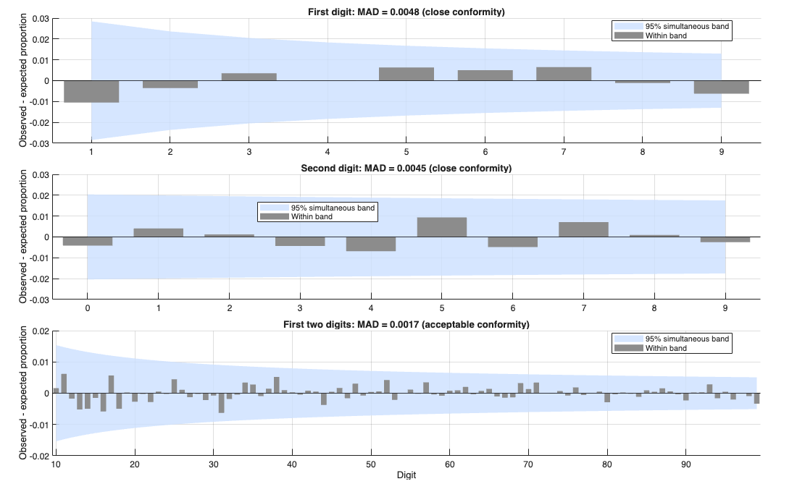
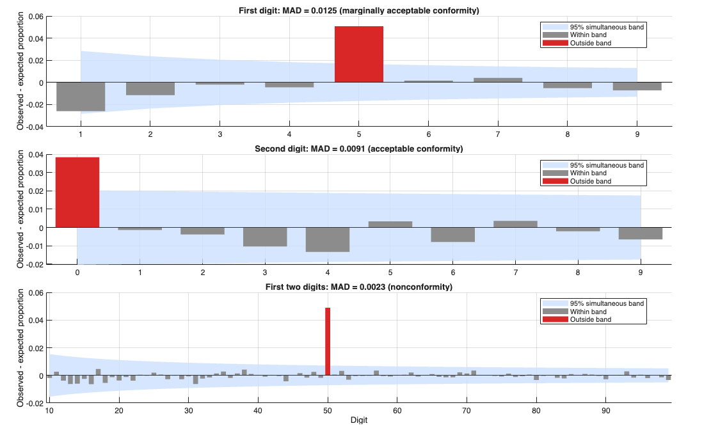
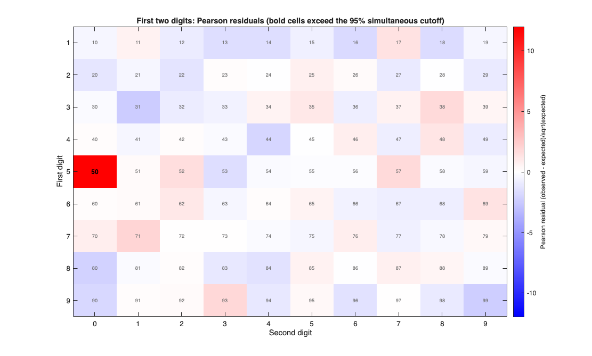

benfordplot
benfordplot draws the graphical diagnostics of a Benford analysi
Description
benfordplot takes the structure produced by function benford and draws the requested diagnostic plots. Computation and plotting are separated: no test is recomputed here, so the plots can be redrawn (e.g. with a different significance level) without repeating the Monte Carlo simulations stored in out.
The plots are of two kinds: those that compare the observed digit frequencies with the Benford law (labels "first", "second", "firsttwo", "deviation" and "heatmap") and those that accompany a specific test of function benford (labels "mantissa", "twostage", "savvy", "lacunary", "duplication" and "magnitude"). A plot whose ingredients are not in out (for example "twostage" when the two-stage test has not been run) is skipped, with a warning if it was explicitly requested.
Heatmap of the first-two-digit Pearson residuals.h
=benfordplot(out,
Name, Value)
Examples
 Deviation plots with simultaneous bands and MAD conformity category.
Deviation plots with simultaneous bands and MAD conformity category.
Deviation plots with simultaneous bands and MAD conformity category.. Clean sample: the bars stay within the bands and the MAD is small.
rng(1) V = 10.^(3*rand(2000,1)); out = benford(V,'Plots',false,'Display',false); h = benfordplot(out,'plots',"deviation");

Heatmap of the first-two-digit Pearson residuals.
Heatmap of the first-two-digit Pearson residuals.. 5% of the amounts have been replaced by the round values 50, 500 and 5000: a single hot cell appears in the row of first digit 5, column of second digit 0.
rng(1) n = 2000; V = 10.^(3*rand(n,1)); idx = randperm(n,100); V(idx) = 50*10.^randi([0 2],100,1); out = benford(V,'Plots',false,'Display',false); h = benfordplot(out,'plots',["deviation","heatmap"]);


Related Examples
Input Arguments
Output Arguments
References
Nigrini, M.J. (2012). Benford's Law: Applications for Forensic Accounting, Auditing, and Fraud Detection. Wiley, Hoboken, NJ.
(MAD conformity ranges used in "deviation")
Goodman, L.A. (1965). On simultaneous confidence intervals for multinomial proportions. Technometrics, 7(2), 247-254.
(simultaneous bands for multinomial proportions; the Bonferroni version based on the normal approximation is used here)
Kuiper, N.H. (1960). Tests concerning random points on a circle.
Proceedings of the Koninklijke Nederlandse Akademie van Wetenschappen, Series A, 63, 38-47.
Stephens, M.A. (1970). Use of the Kolmogorov-Smirnov, Cramer-von Mises and related statistics without extensive tables. Journal of the Royal Statistical Society, Series B, 32(1), 115-122.
(finite-sample critical values for the KS and Kuiper bands)